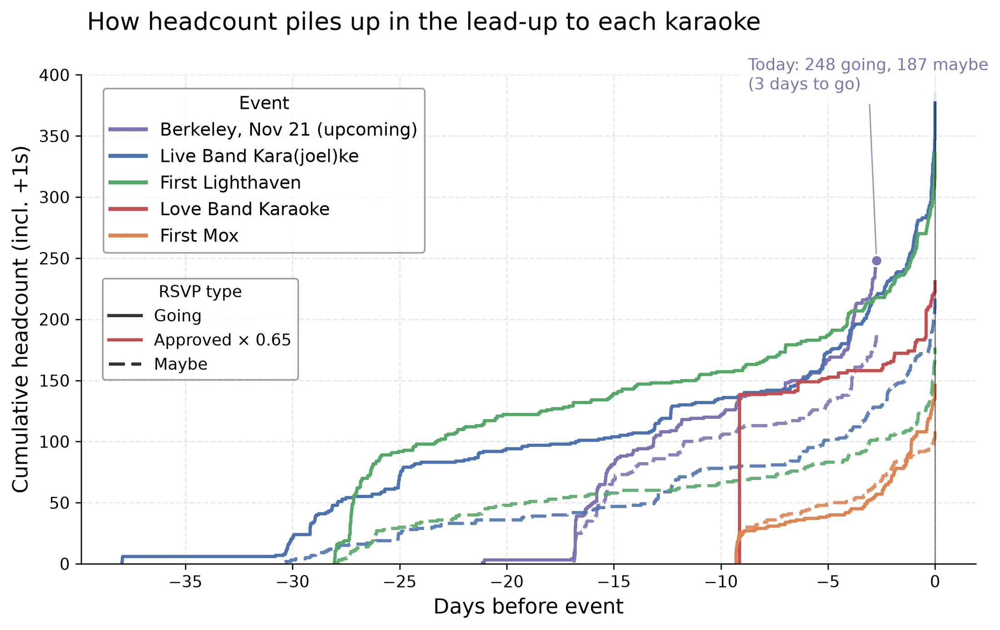
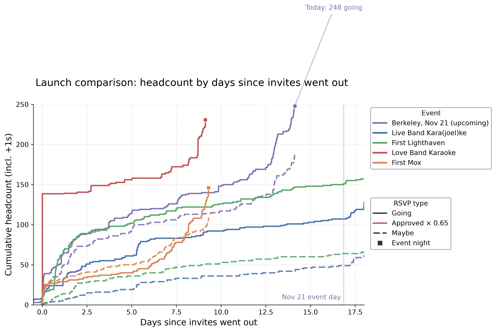
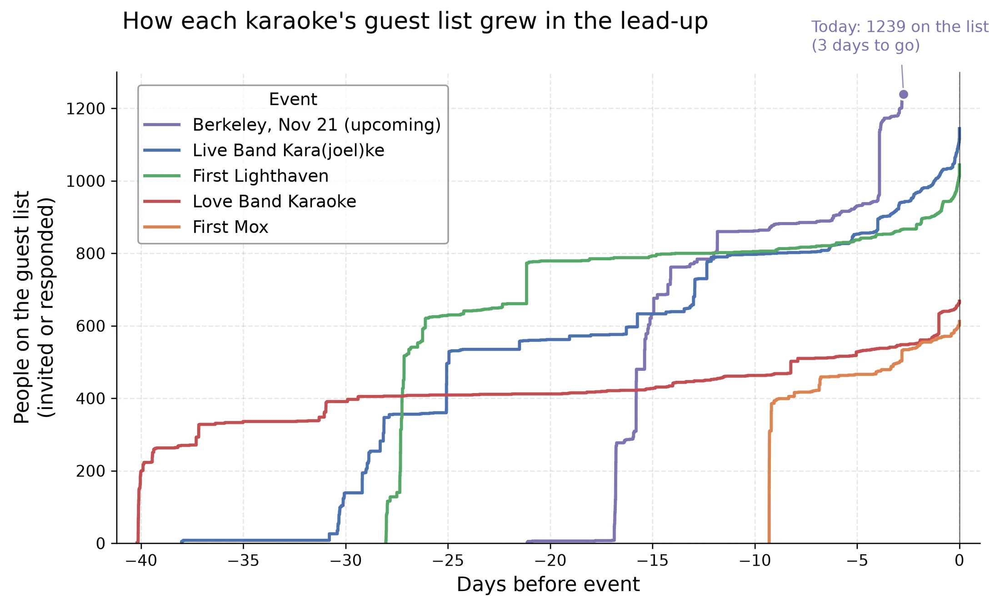
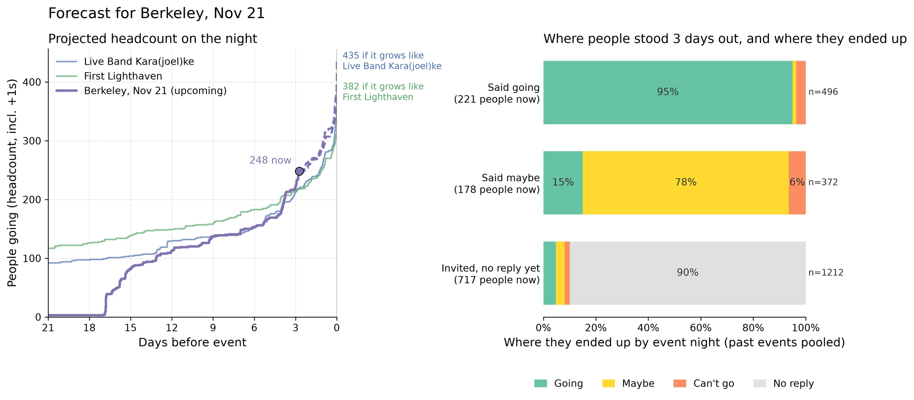
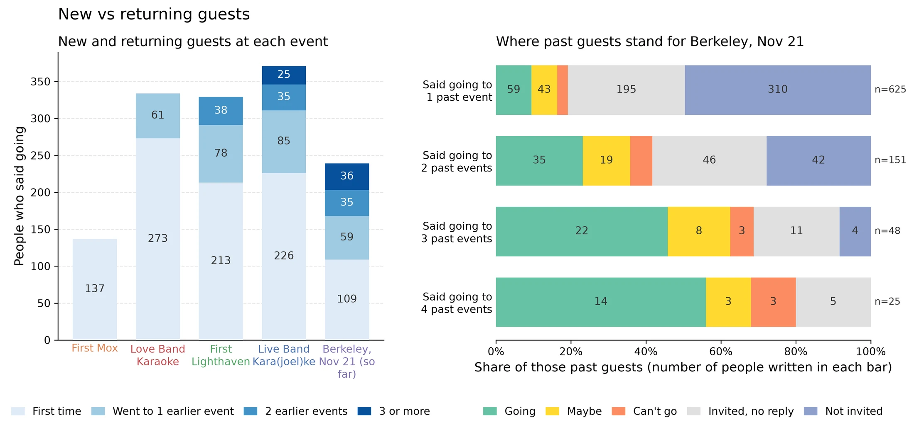
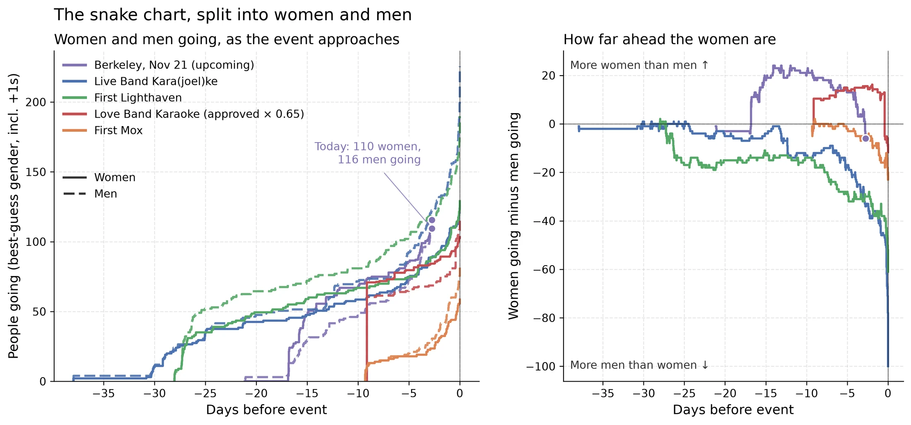
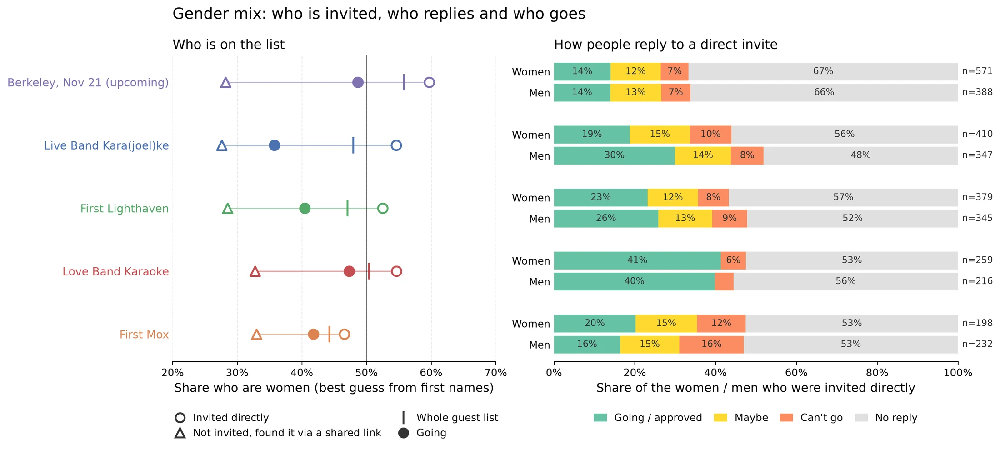
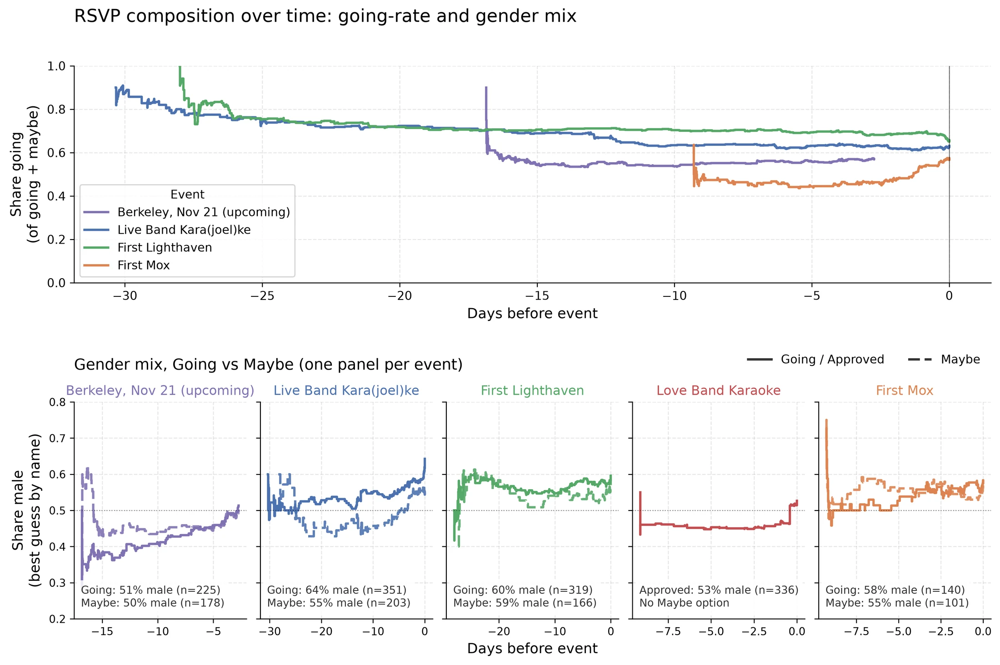
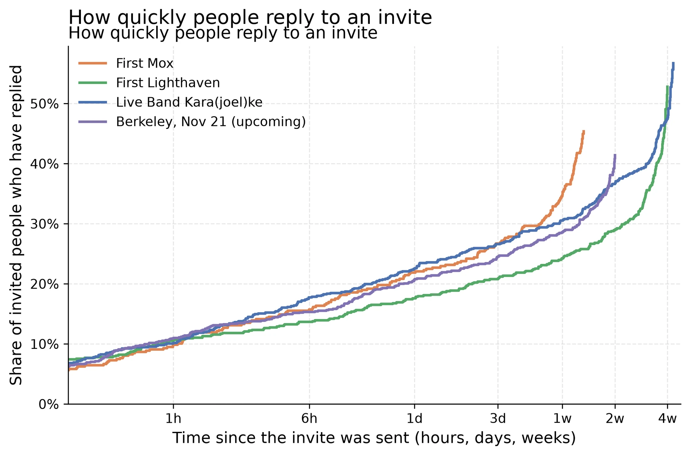

RSVPs for Berkeley, Nov 21
Updated Wed Nov 18, 11:26pm Pacific 3 days to go
Lead-up
Headcount as the night approaches
People going (solid) and maybe (dashed), counting +1s, against days before each event.

The first days after invites went out
The same lines counted from each event's launch, so the starts can be compared.

Size of the guest list
Everyone invited or replied so far, against days before each event.

Forecast
Where the headcount is heading
Left: the going headcount projected forward as if it grows the way past events grew from this point. Right: what people at past events ended up doing, by where they stood this many days out.

Regulars
New and returning guests
Left: people going to each event, by how many earlier ones they went to. Right: where past guests stand for this one.

Women and men
Women and men going, as the night approaches
Left: women (solid) and men (dashed) going at each event. Right: women going minus men going.

Who gets invited, and who says yes
Left: share of women among people invited, people who found the link, the whole list and people going. Right: how invited women and men replied.

Share going, and share of men, over time
Top: of the people who said going or maybe, the share who said going. Bottom: share of men at each event.

Replies
How quickly people reply to an invite
Share of invited people who have replied, against time since their invite was sent.

About
Numbers come from the Partiful guest lists of this event and the four before it.
Women and men are a best guess from first names. People whose names can't be placed are left out, and a +1 without a name counts as half a woman and half a man.
One past event (Love Band Karaoke) approved guests rather than letting them say going, so its line counts each approved guest as 0.65 of a person going.
Tap a chart to open it full size.